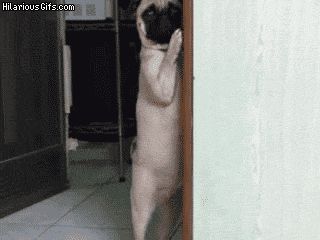

Gabrielle Holland
Bio
My name is Gabby Holland, when the 2018-2019 school year starts up again I will be a senior at South Meck High. I have an older sister named Valerie and she lives in Japan! I am taking a coding class called Girls Who Code to understand various computer skills. I plan to go to NC State college and major in science to get my dream career. I really want to be a wildlife biologist when I choose a career.
What do I Like?
I love to play video games and draw fantasy people such as demons and humanoids. If you don't know what a humanoid is, it is basically a human combined with something else, usually animal. For example I have drawn a girl that is half human and half fox. She's so cute! I also love to draw animals you would never see such as dragons and made up creatures. An example of a made up creature I made is a small creature that is basically half cat and half rabbit. I named it Frizzy. My favorite games are almost any game in the The Legend of Zelda series and the computer game World of Warcraft. I recently finished playing Zelda Breath of the Wild and this map came to be very helpful. zeldadungeon Interactive Map

What do I Dislike?
I rather dislike reading and writing, but I have gotten better at writing. I’m also extremely shy and don’t like to speak or perform in any way in front of people. Even if it’s my own direct family or relatives. If I ever preform or present in front of one or many people, I always want to be in a group and never speak first. If I have to be alone with no other option, I try to present or preform in the middle so that i'm not first, but not last becasue people always remember who's presentation was last since it was the most recent one to be seen.
